growthSim can be used to help pick reasonable parameters for common growth models to use in prior distributions or to simulate data for example models/plots.
Arguments
- model
One of "logistic", "gompertz", "weibull", "frechet", "gumbel", "monomolecular", "exponential", "linear", "power law", "logarithmic", "bragg", "double logistic", or "double gompertz". Alternatively this can be a pseudo formula to generate data from a segmented growth curve by specifying "model1 + model2", see examples and
growthSS. Decay can be specified by including "decay" as part of the model such as "logistic decay" or "linear + linear decay". Count data can be specified with the "count: " prefix, similar to using "poisson: model" in growthSS. Similarly intercepts can be added with the "int_" prefix, in which case an "I" parameter should be specified. While "gam" models are supported bygrowthSSthey are not simulated by this function.- n
Number of individuals to simulate over time per each group in params
- t
Max time (assumed to start at 1) to simulate growth to as an integer.
- params
A list of numeric parameters. A, B, C notation is used in the order that parameters appear in the formula (see examples). Number of groups is inferred from the length of these vectors of parameters. In the case of the "double" models there are also A2, B2, and C2 terms. Changepoints should be specified as "changePointX" or "fixedChangePointX" as in
growthSS.- D
If decay is being simulated then this is the starting point for decay. This defaults to 0.
Details
The params argument requires some understanding of how each growth model is parameterized.
Examples of each are below should help, as will the examples.
Logistic: `A / (1 + exp( (B-x)/C) )` Where A is the asymptote, B is the inflection point, C is the growth rate.
Gompertz: `A * exp(-B * exp(-C*x))` Where A is the asymptote, B is the inflection point, C is the growth rate.
Weibull: `A * (1-exp(-(x/C)^B))` Where A is the asymptote, B is the weibull shape parameter, C is the weibull scale parameter.
Frechet: `A * exp(-((x-0)/C)^(-B))` Where A is the asymptote, B is the frechet shape parameter, C is the frechet scale parameter. Note that the location parameter (conventionally m) is 0 in these models for simplicity but is still included in the formula.
Gumbel: `A * exp(-exp(-(x-B)/C))` Where A is the asymptote, B is the inflection point (location), C is the growth rate (scale).
Double Logistic: `A / (1+exp((B-x)/C)) + ((A2-A) /(1+exp((B2-x)/C2)))` Where A is the asymptote, B is the inflection point, C is the growth rate, A2 is the second asymptote, B2 is the second inflection point, and C2 is the second growth rate.
Double Gompertz: `A * exp(-B * exp(-C*x)) + ((A2-A) * exp(-B2 * exp(-C2*(x-B))))` Where A is the asymptote, B is the inflection point, C is the growth rate, A2 is the second asymptote, B2 is the second inflection point, and C2 is the second growth rate.
Monomolecular: `A-A * exp(-B * x)` Where A is the asymptote and B is the growth rate.
Exponential: `A * exp(B * x)` Where A is the scale parameter and B is the growth rate.
Linear: `A * x` Where A is the growth rate.
Logarithmic: `A * log(x)` Where A is the growth rate.
Power Law: `A * x ^ (B)` Where A is the scale parameter and B is the growth rate.
Bragg: `A * exp(-B * (x - C) ^ 2)` This models minima and maxima as a dose-response curve where A is the max response, B is the "precision" or slope at inflection, and C is the x position of the max response.
Lorentz: `A / (1 + B * (x - C) ^ 2)` This models minima and maxima as a dose-response curve where A is the max response, B is the "precision" or slope at inflection, and C is the x position of the max response. Generally Bragg is preferred to Lorentz for dose-response curves.
Beta: `A * (((x - D) / (C - D)) * ((E - x) / (E - C)) ^ ((E - C) / (C - D))) ^ B` This models minima and maxima as a dose-response curve where A is the Maximum Value, B is a shape/concavity exponent similar to the sum of alpha and beta in a Beta distribution, C is the position of maximum value, D is the minimum position where distribution > 0, E is the maximum position where distribution > 0. This is a difficult model to fit but can model non-symmetric dose-response relationships which may sometimes be worth the extra effort.
Note that for these distributions parameters generally do not exist in a vacuum. Changing one will make the others look different in the resulting data. The examples are a good place to start if you are unsure what parameters to use.
Examples
library(ggplot2)
simdf <- growthSim("logistic",
n = 20, t = 25,
params = list("A" = c(200, 160), "B" = c(13, 11), "C" = c(3, 3.5))
)
ggplot(simdf, aes(time, y, group = interaction(group, id))) +
geom_line(aes(color = group)) +
labs(title = "Logistic")
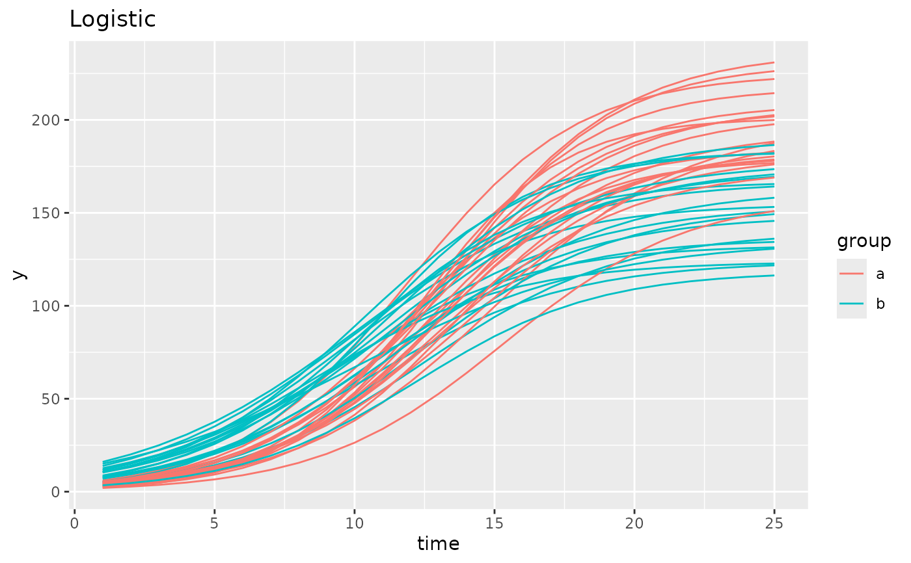
simdf <- growthSim("gompertz",
n = 20, t = 25,
params = list("A" = c(200, 160), "B" = c(13, 11), "C" = c(0.2, 0.25))
)
ggplot(simdf, aes(time, y, group = interaction(group, id))) +
geom_line(aes(color = group)) +
labs(title = "Gompertz")
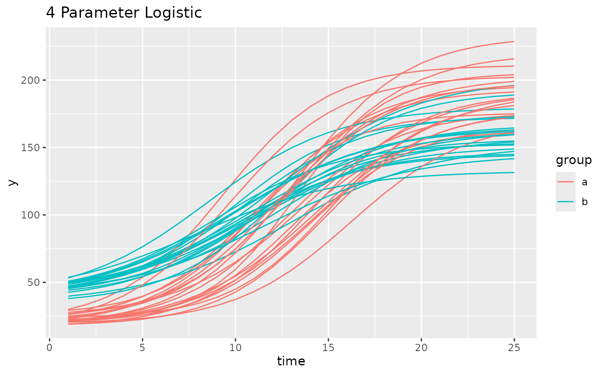
simdf <- growthSim("weibull",
n = 20, t = 25,
params = list("A" = c(100, 100), "B" = c(1, 0.75), "C" = c(2, 3))
)
ggplot(simdf, aes(time, y, group = interaction(group, id))) +
geom_line(aes(color = group)) +
labs(title = "weibull")
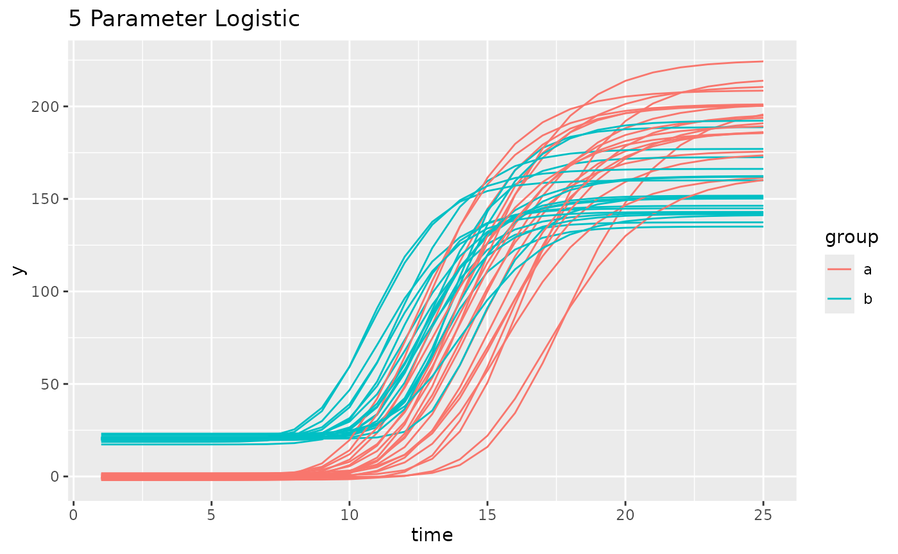
simdf <- growthSim("frechet",
n = 20, t = 25,
params = list("A" = c(100, 110), "B" = c(2, 1.5), "C" = c(5, 2))
)
ggplot(simdf, aes(time, y, group = interaction(group, id))) +
geom_line(aes(color = group)) +
labs(title = "frechet")
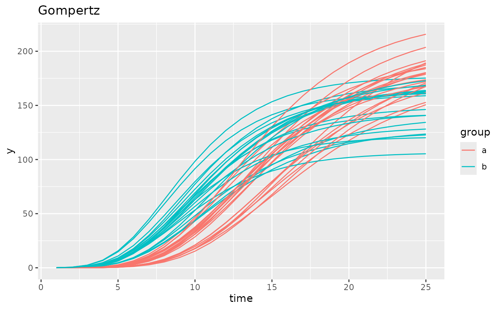
simdf <- growthSim("gumbel",
n = 20, t = 25,
list("A" = c(120, 140), "B" = c(6, 5), "C" = c(4, 3))
)
ggplot(simdf, aes(time, y, group = interaction(group, id))) +
geom_line(aes(color = group)) +
labs(title = "gumbel")
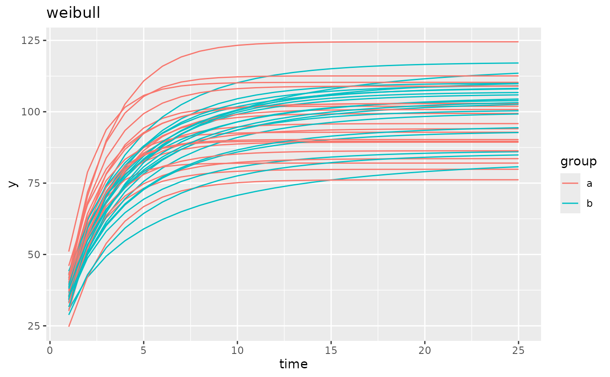
simdf <- growthSim("double logistic",
n = 20, t = 70,
params = list(
"A" = c(200, 160), "B" = c(13, 11), "C" = c(3, 3.5),
"A2" = c(400, 300), "B2" = c(35, 40), "C2" = c(3.25, 2.75)
)
)
ggplot(simdf, aes(time, y, group = interaction(group, id))) +
geom_line(aes(color = group)) +
labs(title = "Double Logistic")
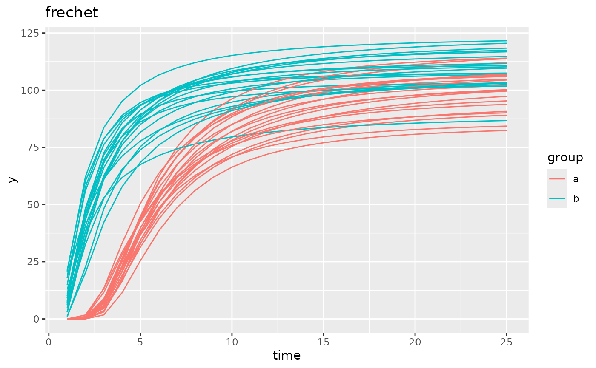
simdf <- growthSim("double gompertz",
n = 20, t = 100,
params = list(
"A" = c(180, 140), "B" = c(13, 11), "C" = c(0.2, 0.2),
"A2" = c(400, 300), "B2" = c(50, 50), "C2" = c(0.1, 0.1)
)
)
ggplot(simdf, aes(time, y, group = interaction(group, id))) +
geom_line(aes(color = group)) +
labs(title = "Double Gompertz")
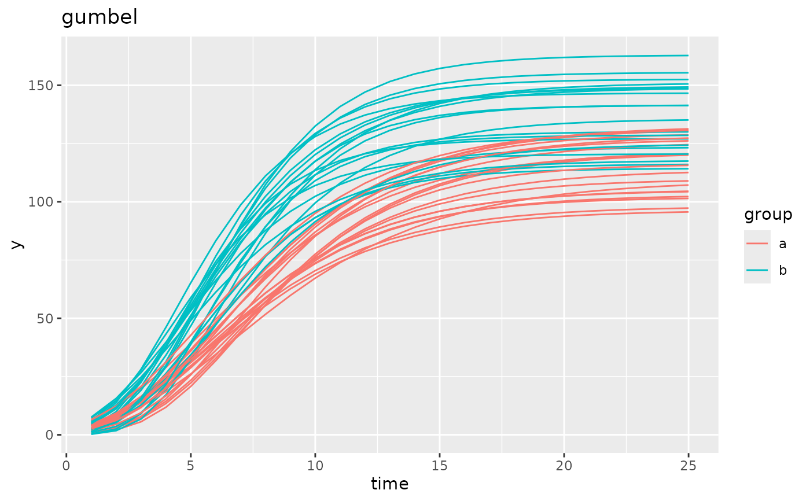
simdf <- growthSim("monomolecular",
n = 20, t = 25,
params = list("A" = c(200, 160), "B" = c(0.08, 0.1))
)
ggplot(simdf, aes(time, y, group = interaction(group, id))) +
geom_line(aes(color = group)) +
labs(title = "Monomolecular")
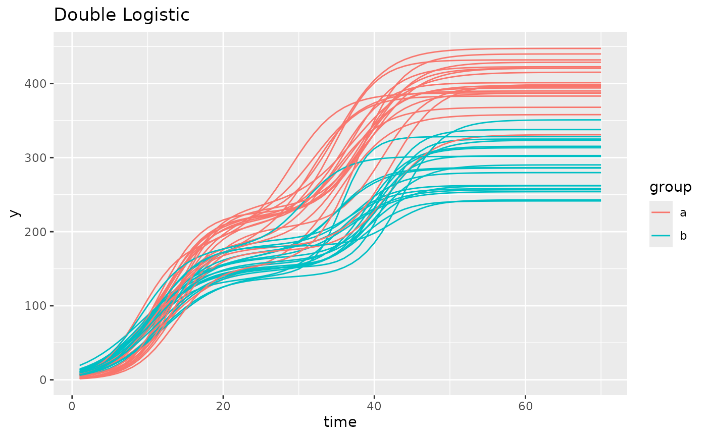
simdf <- growthSim("exponential",
n = 20, t = 25,
params = list("A" = c(15, 20), "B" = c(0.095, 0.095))
)
ggplot(simdf, aes(time, y, group = interaction(group, id))) +
geom_line(aes(color = group)) +
labs(title = "Exponential")
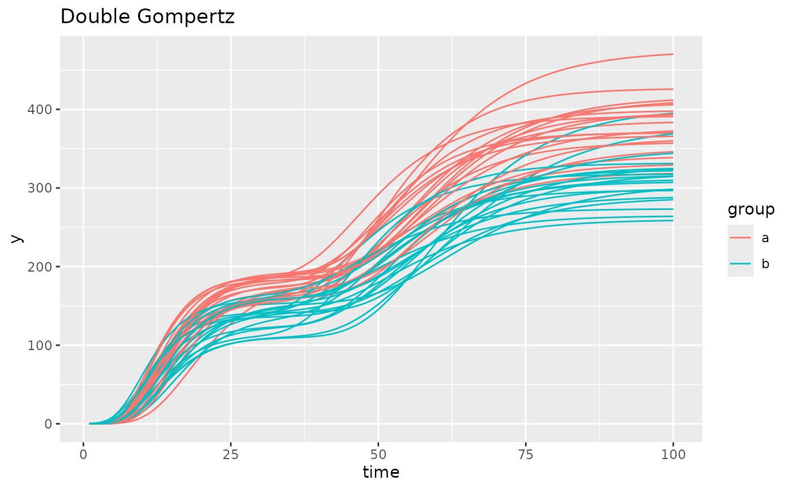
simdf <- growthSim("linear",
n = 20, t = 25,
params = list("A" = c(1.1, 0.95))
)
ggplot(simdf, aes(time, y, group = interaction(group, id))) +
geom_line(aes(color = group)) +
labs(title = "Linear")
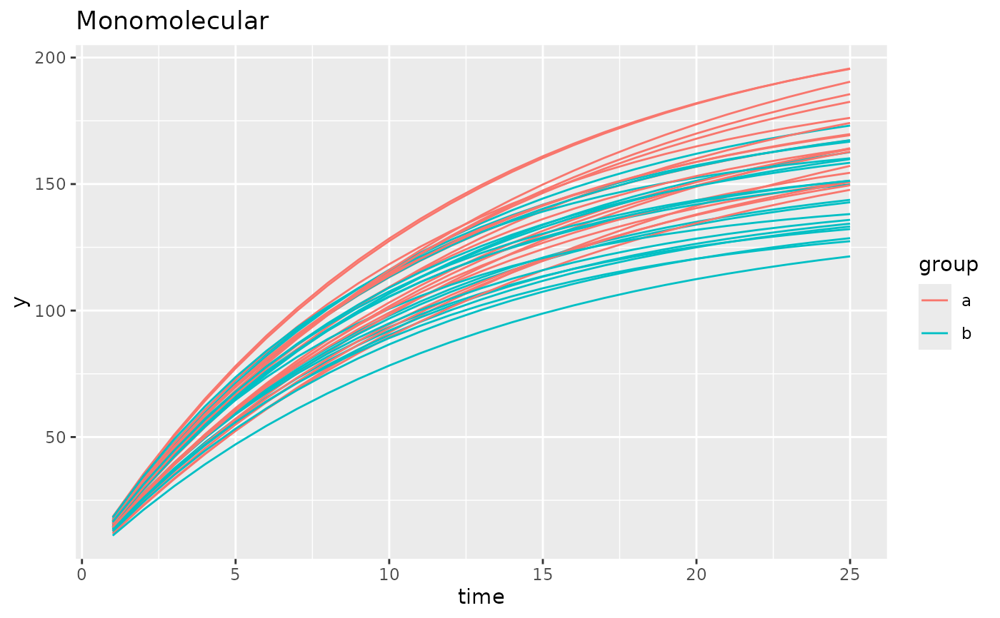
simdf <- growthSim("int_linear",
n = 20, t = 25,
params = list("A" = c(1.1, 0.95), I = c(100, 120))
)
ggplot(simdf, aes(time, y, group = interaction(group, id))) +
geom_line(aes(color = group)) +
labs(title = "Linear with Intercept")
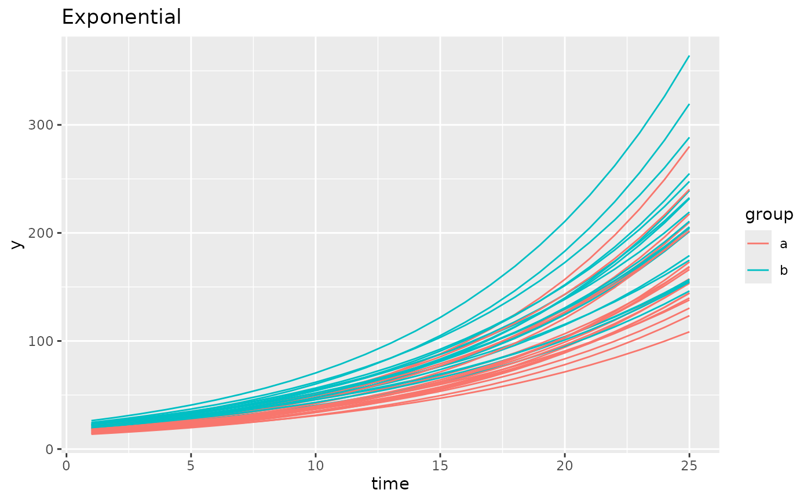
simdf <- growthSim("logarithmic",
n = 20, t = 25,
params = list("A" = c(2, 1.7))
)
ggplot(simdf, aes(time, y, group = interaction(group, id))) +
geom_line(aes(color = group)) +
labs(title = "Logarithmic")
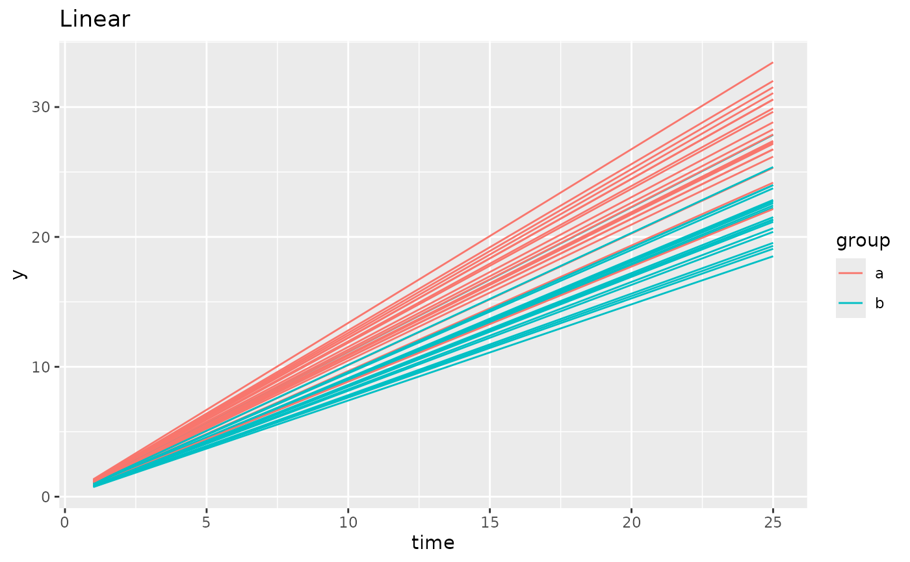
simdf <- growthSim("power law",
n = 20, t = 25,
params = list("A" = c(16, 11), "B" = c(0.75, 0.7))
)
ggplot(simdf, aes(time, y, group = interaction(group, id))) +
geom_line(aes(color = group)) +
labs(title = "Power Law")
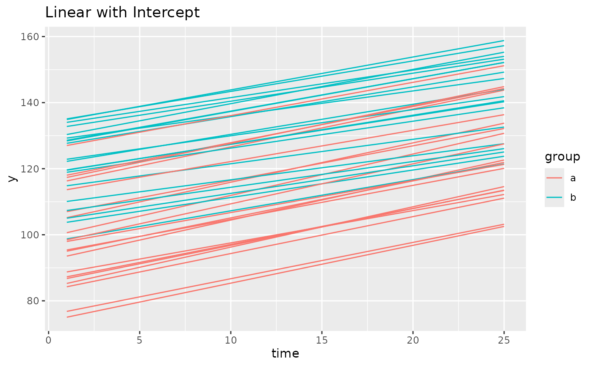
simdf <- growthSim("bragg",
n = 20, t = 100,
list("A" = c(10, 15), "B" = c(0.01, 0.02), "C" = c(50, 60))
)
ggplot(simdf, aes(time, y, group = interaction(group, id))) +
geom_line(aes(color = group)) +
labs(title = "bragg")
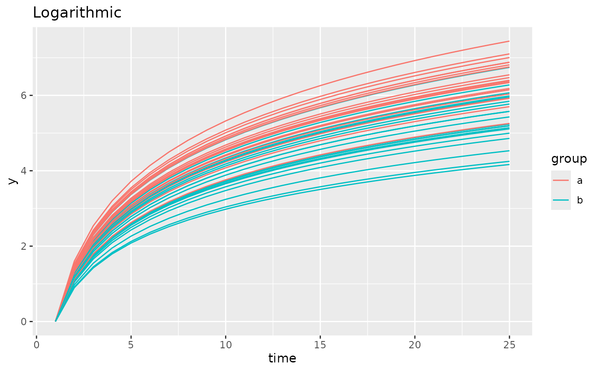
# simulating models from segmented growth models
simdf <- growthSim(
model = "linear + linear", n = 20, t = 25,
params = list("linear1A" = c(16, 11), "linear2A" = c(0.75, 0.7), "changePoint1" = c(11, 14))
)
ggplot(simdf, aes(time, y, group = interaction(group, id))) +
geom_line(aes(color = group)) +
labs(title = "linear + linear")
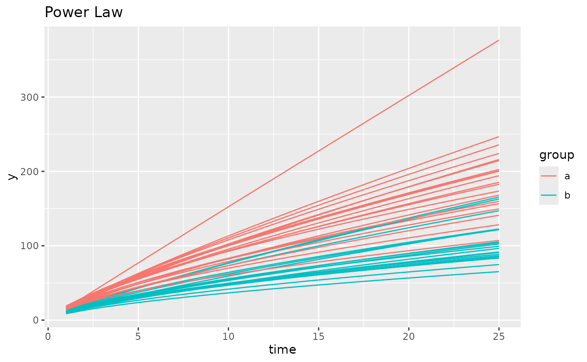
simdf <- growthSim(
model = "linear + linear decay", n = 20, t = 25,
params = list("linear1A" = c(16, 11), "linear2A" = c(3, 2), "changePoint1" = c(11, 14))
)
ggplot(simdf, aes(time, y, group = interaction(group, id))) +
geom_line(aes(color = group)) +
labs(title = "linear + linear decay")
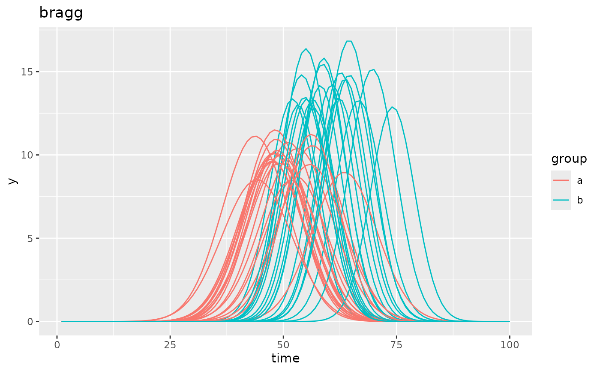
simdf <- growthSim(
model = "linear + linear + logistic", n = 20, t = 50,
params = list(
"linear1A" = c(16, 11), "linear2A" = c(3, 4), # linear slopes, very intuitive
"changePoint1" = c(11, 14), "changePoint2" = c(10, 12),
# changepoint1 is standard, changepoint2 happens relative to changepoint 1
"logistic3A" = c(200, 210), "logistic3B" = c(20, 25), "logistic3C" = c(3, 3)
)
)
# similar to changepoint2, the asymptote and inflection point are relative to the starting
# point of the logistic growth component. This is different than the model output
# if you were to fit a curve to this model using `growthSS`.
ggplot(simdf, aes(time, y, group = interaction(group, id))) +
geom_line(aes(color = group)) +
labs(title = "linear + linear + logistic")
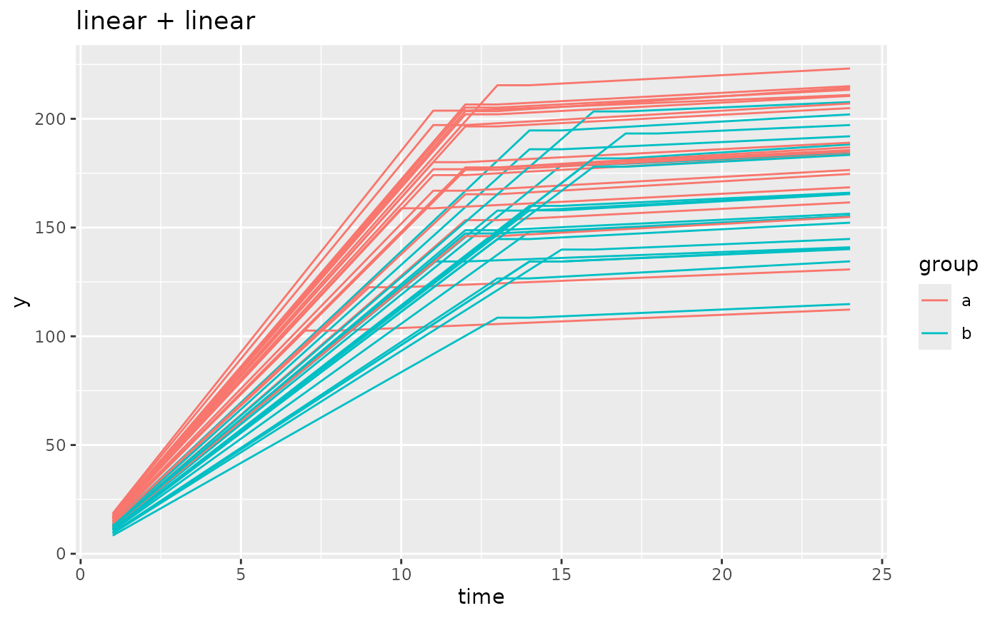